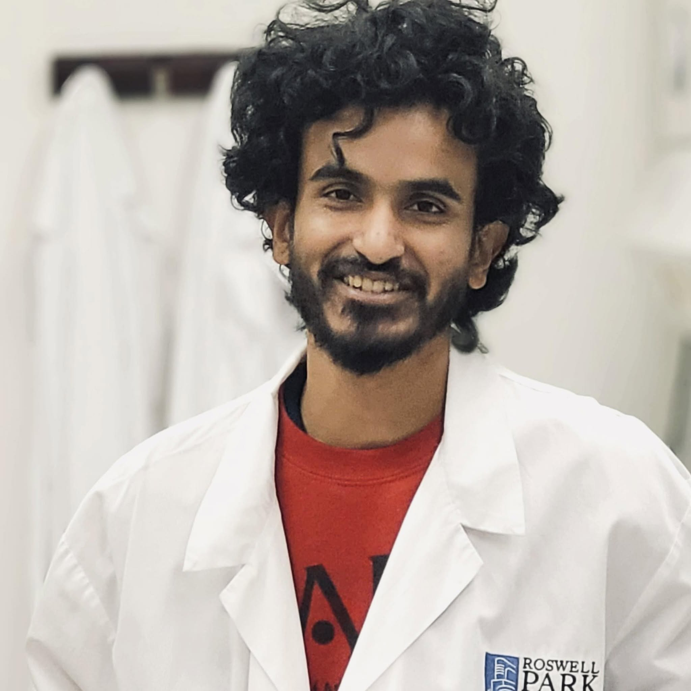

Cancer Biology · Tumor Metabolism

Postdoctoral Fellow, Roswell Park Comprehensive Cancer Center
I am a Postdoctoral Fellow at Roswell Park Comprehensive Cancer Center in Buffalo, NY. My research focuses on how tumor metabolism reshapes the metastatic niche, with a particular emphasis on castration-resistant prostate cancer (CRPC).
I combine approaches from immunometabolism, epigenetics, CRISPR screening, and metabolomics to identify actionable vulnerabilities in aggressive cancers. I am also interested in how mitochondrial dysfunction and cellular senescence contribute to age-related diseases.
I earned my Ph.D. in Cell Biology & Physiology from the University of Arkansas for Medical Sciences (UAMS) in 2025, where I worked in Dr. Maria Almeida's lab studying the effects of mitochondrial reactive oxygen species and chemotherapy drugs on bone mesenchymal cells.
Feel free to reach out at MdMohsin.Ali@RoswellPark.org — I am always open to collaborations and scientific discussions.